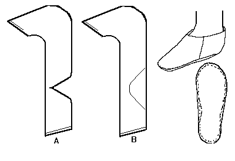
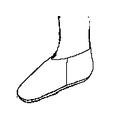
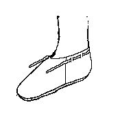
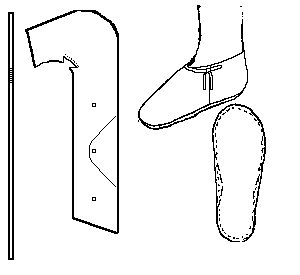
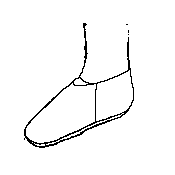
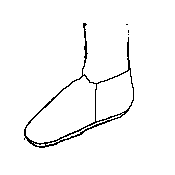

Scoh, "Type 3"
(10th - 11th Centuries)
The typology is based on that used by Carlisle, although any errors in the interpretation here are likely to be mine. This is the basic side-seamed turnshoe, from which many other shoe designs developed. In the drawing above, 3A indicates a shoe with a heel-riser, while 3B indicates a show without one.
All of the following designs are based on this simple construction and are based on descriptions found in Carlisle.
Altough it is not clearly specified, it appears from the finds that there should be a binding cord held in place by a Edge/flesh binding-stitch across the upper edge, or, more commonly, a top band may be set in place by a hidden whipstitch. The version with the heel cap has that sewn in with a whip stitch/tunnel stitch.
The turned sole usually appear to have been attached by a grain/flesh stitch on the upper, and a flesh/flesh tunnel-stitch on the sole, changing to edge/flesh stitch at the heel riser. Plain edge/flesh stitches are also seen on soles.
Sewing is most generally done with a 1 mm, or so, "thread" of leather lacing..
Type 3a/b1

Basic shoe.
Type 3a/b2 & 3

Shoe with drawstring and decorative drawstring.
Type 3a/b4

Shoe with sidetied drawsting. This design is a little complicated as the drawstring is stitched to the vamp by a simple whip stitch about 1/4th of the distance from one end. There does not seem to be a clear indication about how the shoe should be laced, however. The most reasonble way, at this point, appears to lace the long portion of the drawstringback, through one lacing hole, around the back of the heel and ignoring the rear hole altogether, then coming back out the remaining hole to tie with the shorter portion of the lace on the side of the shoe.
Type 3a/b5

Shoe with throat insert. This takes the basic design and attaches a wedge of leather at the instep to raise the front of the show, and is a predecessor to several later designs. For example:
Type 3b6

Medieval Shoe (12-13th Centuries), with a pointed throat. This shoe was also found at York and is similar to several later designs.
Return to
[Index] or
[Next]
Footwear of the Middle Ages - Historical Shoe Designs/Number 5, by I. Marc Carlson. Copyright 1998
This page is given for the free exchange of information, provided the Author's Name is included in all future revisions, and no money change hands, other than as expressed in the Copyright Page.